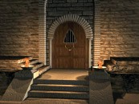
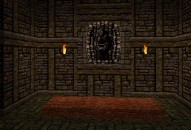
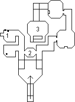

| 1 | Secret Switch, most likely makes the Crystal show up. |
| 2 | Skull Pile, will temporarily remove some Might points. |
| 3 | Room with the Crystal, destroy it to complete the quest. [Destroy Crystal Quest]. |
Leave us a message at: mgrounds@hotmail.com